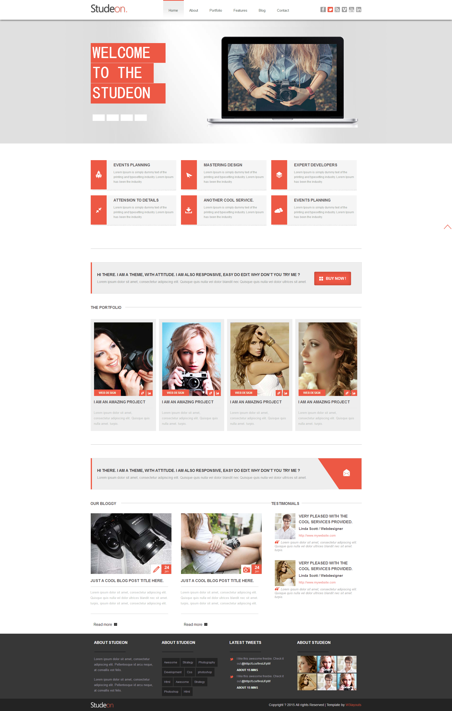
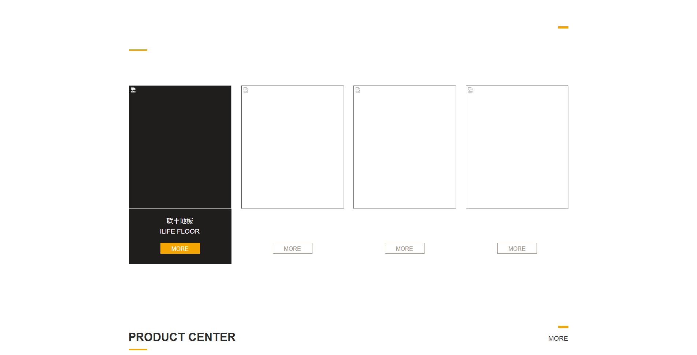

- ·四川托普信息技术职业学院（专科）学习；2011年-2014年
- ·四川理工学院（本科）学习：2014年-2016年7月1日
- ·火星时代成都校区web前端学习：2017年5月-2017年9月
HTML5：
CSS3：
JavaScript：
Ajax：
Bootstrap：
CSS3：
JavaScript：
Ajax：
Bootstrap：
2017
-
5月
- 15日
- 初入前端，技术小白
- 25日
- 学会了html4，css3
- 30日
- 完成了第一个小项目
-
6月
- 15日
- 深入学习，接触了JavaScript
- 20日
- 学会了更丰富的原生js代码
- 25日
- 开始接触使用jquery进行更加简便的代码书写
-
7月
- 1日
- 完成了第二个项目
- 10日
- 深入学习了html5，css3
- 15日
- 完成了第三个项目
项目展示

项目一studeon网页制作
2017年制作的第一个项目studeon页面；运用的技术多为html4和css2；自己通过所学的结构搭建知识将页面结构完美的构建完成；并且加入少量交互效果；(studen网页链接)

项目二京东首页
制作的第二个项目通过对电商网页京东首页的分析；在初期搭建好首页结构；加入少量交互效果；后期在前期的基础上进行了大量的改进；完善了页面；运用所学的html5和css3以及js知识完成了大量的交互效果；增添了页面的丰富度。(京东首页链接)

项目三联丰地板
制作的第三个项目；也是第一个团队合作项目；通过团队的配合协同完成的一套网页；运用了所学的html5，css3，js，ajax，json等技术。再加上团队的共同努力，最终优秀的完成了联丰地板这个项目。(联丰地板链接)
自我评价
我是一位热爱的生活的男孩，喜欢一切美的事物。对于生活的理解就是衣食住行，吃喝玩乐。对于能够让我获得更好的生活的事会不遗余力的向前冲。自从接触到前端后，才慢慢了解到这是个什么技术行业，也对于行业中的大神带有崇拜之情，所以自己才不断的努力，学到尽可能的多的专业技术，通过技术的支持来完成面临的难题和任务，做好这些事写出好代码就是我的游戏任务！
打开开关照亮这个世界
联系我
扫一扫 加好友